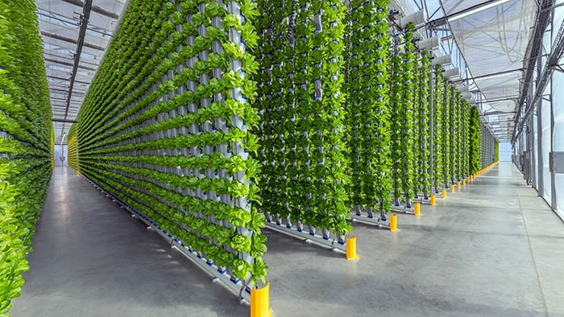

Project Hydroponic simulation
This python package aims to provide some basic tools to simulate hydroponic plant growing.🌱 Hydroponics is a farming method where plants grow without soil and instead use a solution containing the required mineral nutriments.👨🌾 This technique is already widely used but is development for farming on mars.🪐🚀
In particular, this package allows you to simulate the concentration of minerals and the pH of hydroponic solutions. See the “Basic Usage” section below and “example.ipynb” document for further examples and explainantions of the package.
Learn more about hydropics with the following links:
0. Usage 🔥¶
from hydroponics import generate_report
plant_name = "Tomato"
required_nutriments = {"Na+": 0.1, "NO3(-)": 0.5, "K+": 0.2}
solution = {"Na+": 0.2, "NO3(-)": 0.6, "K+": 0.3}
volume = 2 #L
growth_time = 20 #days
forbidden_ions = ["Cl-"]
# Generate an awsome simulation report (PDF)
generate_report(plant_name, required_nutriments, solution, volume, growth_time, forbidden_ions = forbidden_ions)
This usage example shows how to quickly use the package’s main functionality: generate_report that will provide a lot of essential informations for a simulation.
1. Installation 👩💻¶
The following pip command can be used to install the python package. The package was made with python 3.10
pip -m install hydroponics
Be aware, the package uses the following dependencies:
Numpy (1.26.4)
Pandas (2.2.2)
matplotlib (3.8.4)
sympy (1.12)
openpyxl (3.1.2)
Please install the dependencies with their according pip install commands in the right environment.
2. Basic Usage¶
The package uses python dictionaries to store the concentration of the different salts/ion in the solution. By default concentrations are given in [g/L]. However different functions exist to convert g/L to mol/L and inversly.
To determine the quantity of each salt to add to the solution to obain the desired concentration of each ion one can use the make_solution function. This function checks the solubility of the salt.
ion_composition = {"K+":0.1, "Cl-": 0.3, "H2PO4(-)":0.5, "Ca(2+)":0.4} #desired concentrations in [g/L]
volume = 10 #L
forbidden_ions = ["Li+", "SO4(2-)"]
salts_to_add = make_solution(ion_composition, volume, forbidden_ions)
print(salts_to_add)
One can visualise the evolution of the concentration of the ions as the plant grows with the plot_graph function.
volume = 5 #L
...
plot_graph(...)
One can determine the pH of the solution given the concentration of the ions with the get_pHfunction:
solution = {"K+":0.1, "Cl-": 0.3, "H2PO4(-)":0.5, "Ca(2+)":0.4}
pH = get_pH(solution)
print(pH)
See the “tutorial.ipynb” notebook for more complete examples.
3. Datasets¶
This package uses data from the PRIF17 and…
Some solutions and plant compositions are predefined (bell pepper 🫑, cucumber 🥒 and eggplant 🍆), please define a new dict or complete the excel file to use other solutions and new plants.
4. Licence and References¶
This package is under MIT license.
Please click on the MIT sign for further information
Implementation/useful tools:
Modelisations of salt concentrations/pH (needs to be 6-7, depends on plant) over time Recommend salts to add/quantity/seller given a plant an the mixture of salts in the solution Define optimal composition Difine loss of salts depending on plant growth Depending on number/type of plant, how much solution must be added Volume is constant (automatic refilling of bassin with distilled water) Modelise buffer solution Modelisation: We have a closed system where plants can grow using water und salts, after time t=growth_time they are replaced by a new baby plant
Define constant volume of water in the tank [L] and constant T (298K) Define optimal concentration of the different salts (Hoagland) Choose plant –> return how much salt to add when, figures of salt concentration over time, …
Contents: